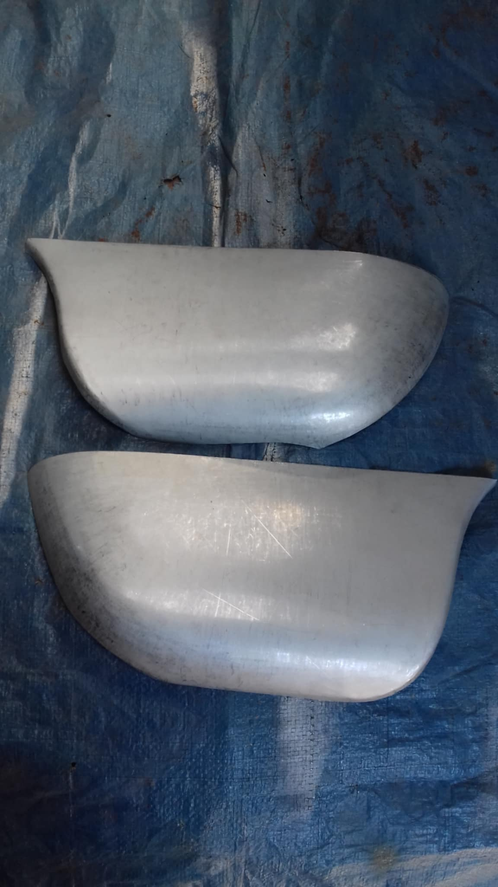
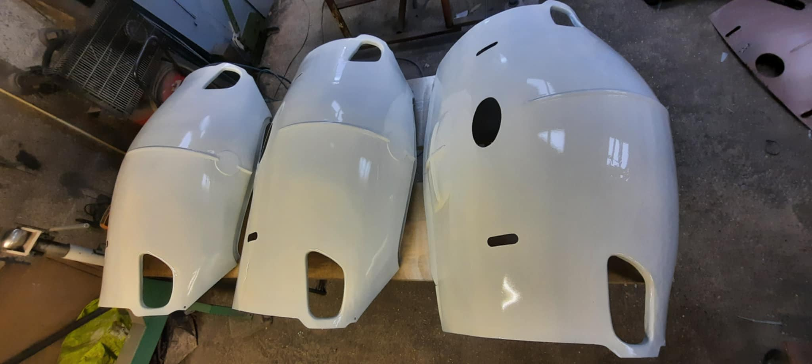
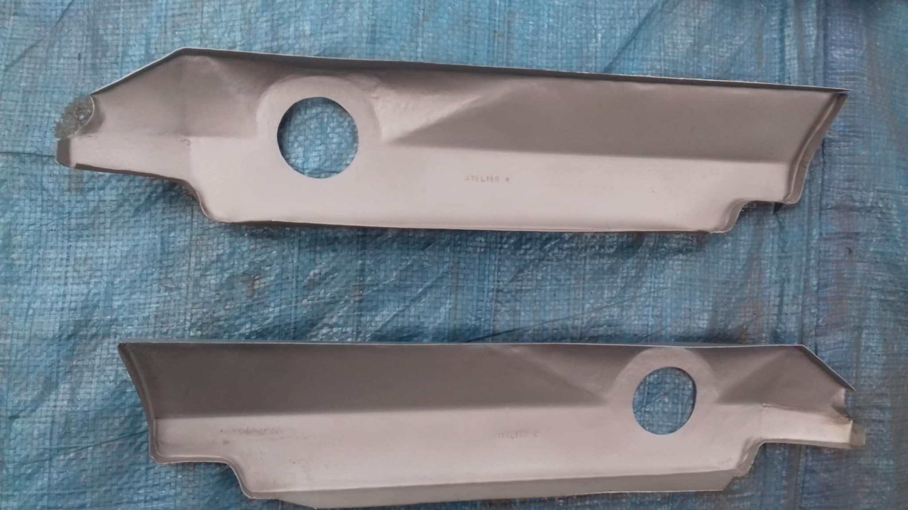
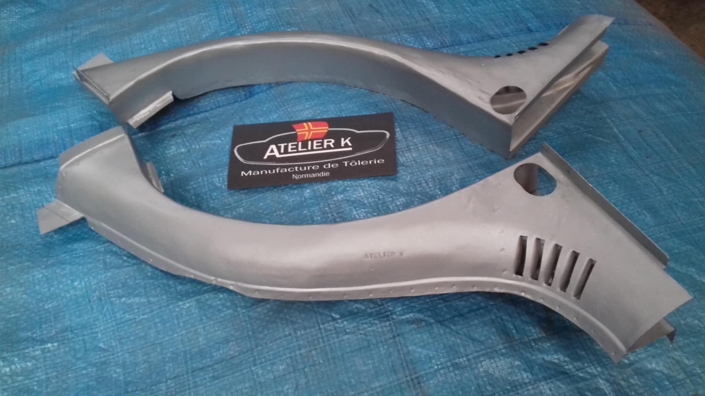
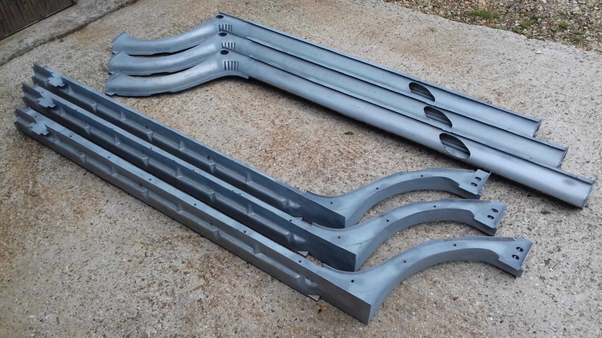
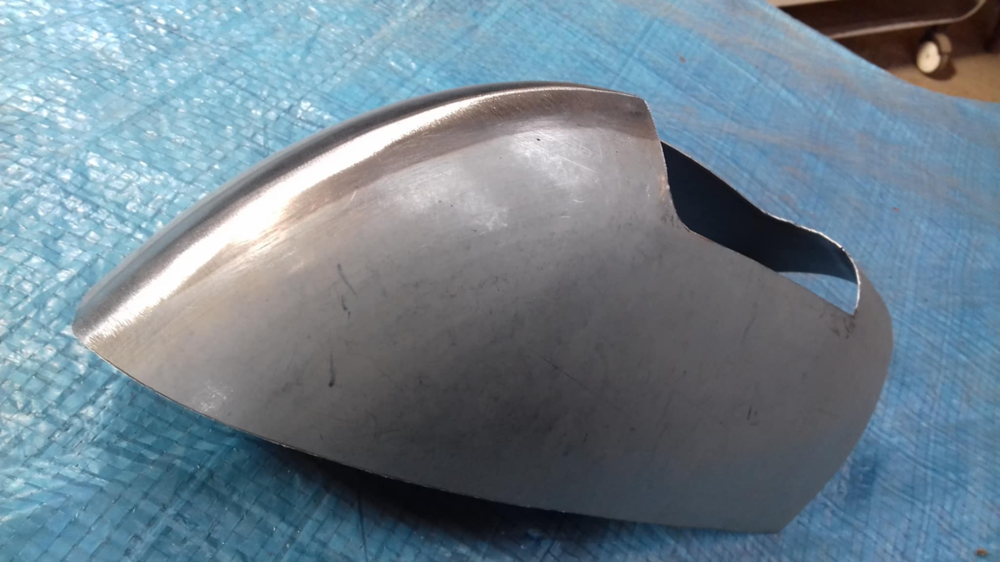
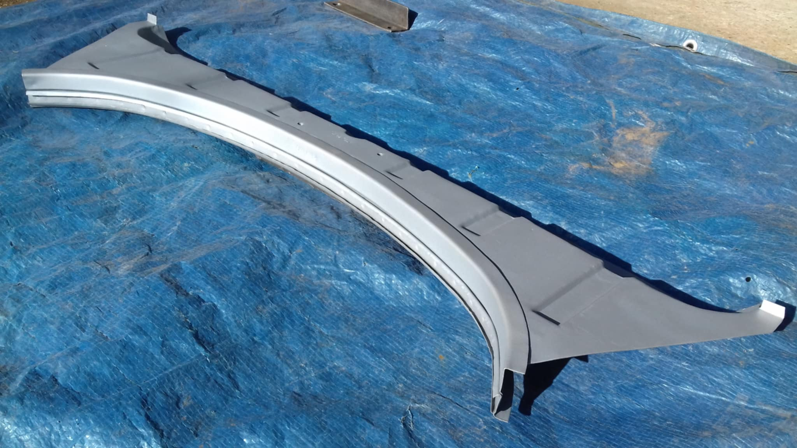
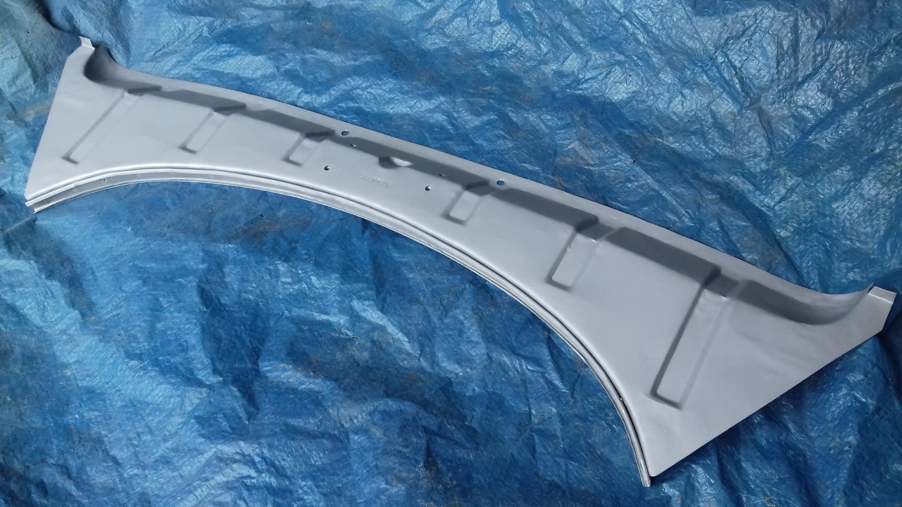
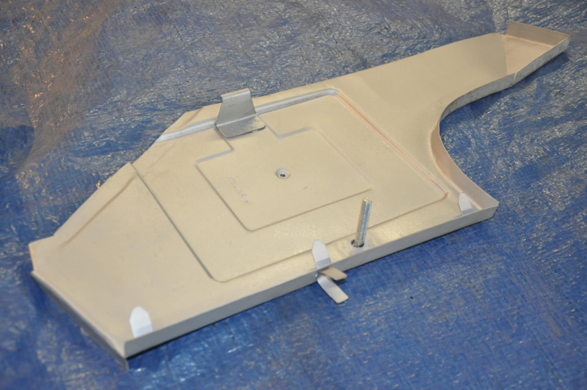

Bas d'aile arrière sous pare-chocs (1955-1966)
120 € l'unité
Sur cette page, vous retrouverez toutes les pièces fabriquées par l'Atelier K, ainsi que leurs tarifs respectifs.
Celles-ci sont entièrement faites sur mesure et fabriquées à la demande.

120 € l'unité

1000 € l'unité (900 € l'unité sans embouti logo)

100 € l'unité

300 € l'unité

490 € l'unité

180 € l'unité

240 € l'unité

240 € l'unité

110 € l'unité